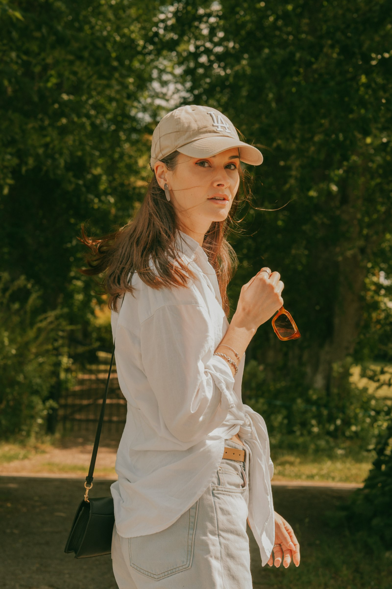
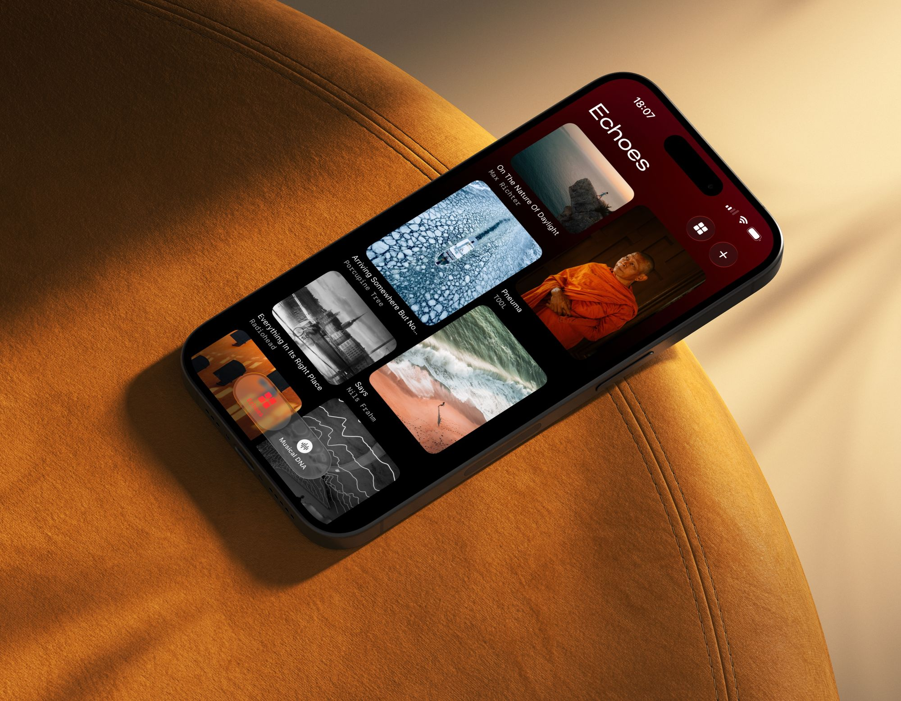
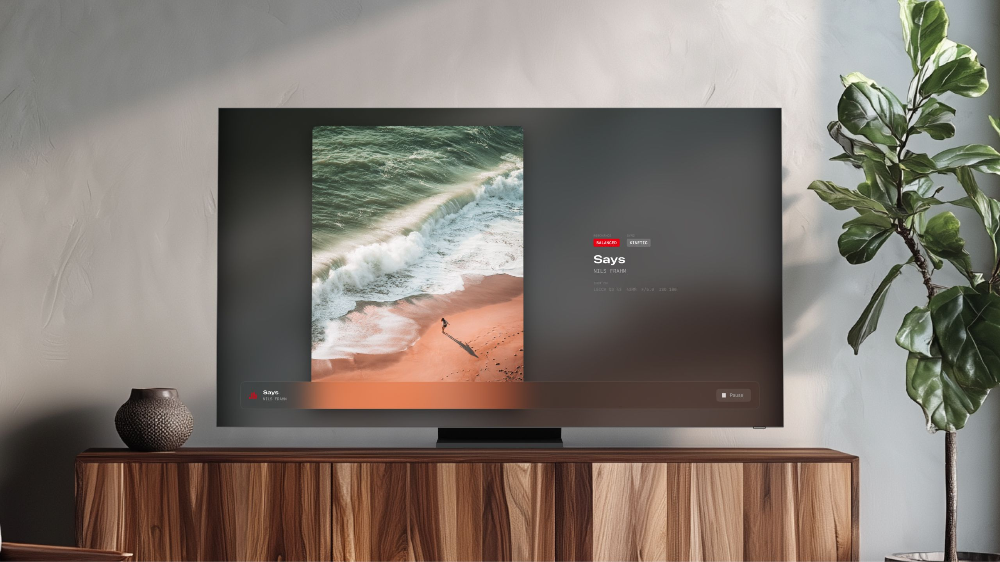

David
I lead design for 70+ people at Volvo Group — and I photograph the quiet in between.
I've spent twenty years working on the part of design that disappears when it works.
The moment a system already knows what you need before you've had to ask — for a rail passenger who just missed a connection, a patient managing a chronic condition, or a designer finding their footing in a global organisation. Photography is the counterweight: where I slow down and pay attention to what stays.
Field notes, on the move.

Leica Q3 43 · 43mm

Leica Q3 43 · 43mm

Leica Q3 43 · 43mm

Leica Q3 43 · 43mm
Leica Q3 43 · 43mm

Leica Q3 43 · 43mm
Building the operating system for how design scales.
At Volvo Group I lead UX Design — 70+ designers, design leads, and managers across Europe, the US, and Asia. What I care about most isn't any single screen; it's the system beneath them: how a function this size sets its process, grows its people, and holds its craft as AI rewrites the job. My best work is the work I can hand away.

Leica Q3 43 · natural light
One of Leica's 100 Photographers.
A humbling place to land for someone who mostly likes to walk slowly and look. The frames below are the ones that stayed with me — where the light was doing something I couldn't have planned.
Leica · 100 Photographers series · 2025 ↗



Leadership never cured the urge to build.
At Electrolux I led interaction design across the connected portfolio — setting the Smart Home UX direction and building universal interaction models that held across product categories and brands. The principle was “learn one, know all”: consistent mental models and interactions everywhere, so a new product never meant relearning how to use it — and hardware and software components could be reused across the range instead of rebuilt each time.
Patents were an adjacent result — several filed so far, with more on the way as they roll out across markets. Four are public: a proximity-aware adaptive display, user recognition with personalised preferences, a safety mode that flags unauthorised users, and a swipe-to-set control for choosing a time or range in a single gesture. But the urge to make things never left.
Built by a small studio.
Passion projects, made in my own time — designed, coded, and shipped only when they're ready. One is live; one is close.

Live · iOSiOS · App Store ↗
Your wardrobe, archived, and composed into outfits worth wearing.

Apple TV · BetaEvery photograph and its sonic double — on the biggest screen in your home.
The Apple TV app pairs each photo with the track that resonates with it, and projects the two together on your television. It's a separate app that shows the Echoes you sync from your phone, so it needs the iPhone beta first. Join the iPhone 2.0 beta ↗, sign into iCloud and save a few Echoes, then install the Apple TV beta ↗ on the same account — they appear on your TV automatically.
A quieter thread.
A small family of apps made with an occupational therapist, who shapes the clinical thinking while I build: helping people through the texture of everyday life, from managing energy and routine to making the spaces they live in safer and easier to be in. Still taking shape; more when they're ready.
Lately.


Say hello.
david@departive.comNo cookies, no tracking · Privacy-first analytics · © 2026